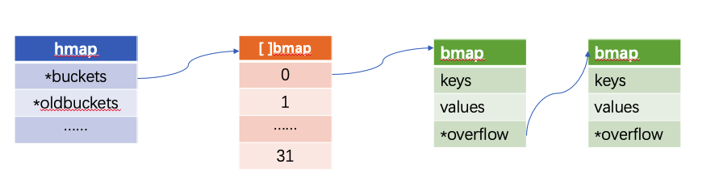
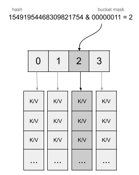
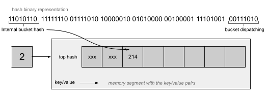
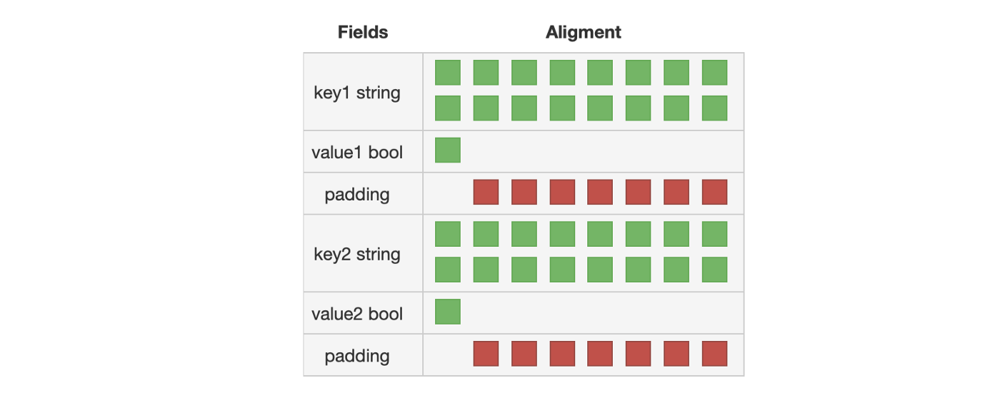
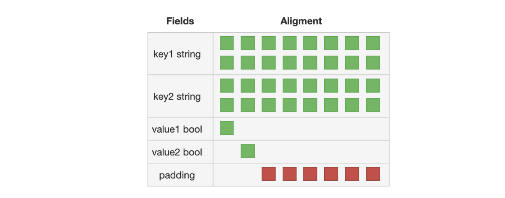
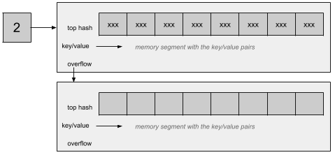

本文基于Golang 1.14
用法以及注意事项
Go blog中介绍了map的基本用法。在Go blog之外，这里介绍几个值得注意的点。
map作为集合(set)
在Golang中，没有集合的类型。所以一般是把map当做集合来用。
看下面例子
1 | func main(){ |
其实对例子进行优化，不使用bool类型，来节省空间。
1 | func main(){ |
使用空的结构体struct{}，会比使用byte节省空间。经过编译器的优化，struct{}指向runtime.zerobase，不占用空间。
map中找不到对应的key，返回默认值
当出现的key在map中不存在时，map返回的value是它的默认值。
看下面一个例子。
1 | package main |
运行结果是
1 | key 1 not exist |
key(1)在map中不存在，返回的结构体是一个初始值为0的结构体。
map作为函数参数
我们知道，如果把一个切片(slice)传给函数，在函数中使用append改变slice的值，在调用完函数后, 切片的值不会改变。
1 | func main() { |
这是由slice的结构决定的，在reflect/value.go中，
1 | // SliceHeader is the runtime representation of a slice. |
Golang中，slice是一个结构体，函数传参是值传递，slice被 copy 后，会成为一个新的slice(Data指针被修改)，对它进行的操作不会影响到实参。
与slice不同的是，map是一个hmap结构体的指针，作为函数参数传递的话，传递的是指针(*hmap)。
1 |
|
键(key)的类型与Golang类型的可比较性
Golang中，map的键(key)类型必须在可比较(comparable)的。Golang的比较运算符中描述，==和!=是比较运算符，并且
channel类型是可比较（comparable）的。当两个channel由同一个make函数创建，或者两个的值都是空，两个channel相等。- 当
struct的字段(field)都是可比较（comparable）的时候，struct类型是可比较的。当结构体对应的非空的字段都相等时，两个结构体相等。 - 接口(Interface)类型的变量是可比较（comparable）的。当两个变量，类型相同，值相等，或者都为
nil时，两个接口类型的变量相等。 - 当Array中的元素是可比较（comparable)的，Array类型的变量是可比较（comparable）。两个
Array变量相等，当每个对应的元素相等。
下面是一个结构体类型作为key的例子
1 | type Key struct { |
map的迭代顺序
使用for range遍历map时，两次变量的顺序不一定是相同的。如果需要稳定的变量顺序，要先遍历一下，记录下key的属性，再按照记录的顺序去遍历。
1 | import "sort" |
散列(hash)和碰撞(collision)
hash(散列)是指将任意的值转换成固定长度的值，例如信息摘要算法MD5，SHA等。在Golang中，map接受任意长度比特（bit）的输入，将其转换为64bit的长度。hash函数实现
在hash64.go代码中，函数参数有一个seed参数，这是为了让产生的hash值更加随机，避免hash洪水攻击
1 | func memhashFallback(p unsafe.Pointer, seed, s uintptr) uintptr { |
hash洪水攻击，利用的是map的散列碰撞。假设我们想要连续插入n个元素到哈希表中：
- 这些元素的键（Key）极少出现相同哈希值，需要
O(n)的时间。 - 这些键频繁出现相同的哈希值（频繁发生碰撞），如果采用的是hash重定位的方法，最差需要
O(n^2)的时间；如果采用链表法，也需要大于O(n)的时间。
当攻击者根据hash算法不断构造会发生碰撞的键，就会是map的性能下降。通过添加一个随机的seed，让攻击者难以产生碰撞的key。
LoadFactor
负载因子（load factor）指的是当一个哈希表（hash table)中的桶(bucket)达到阈值，哈希表会进行容量的调整。
下图中，[]bmap的长度就是桶(bucket)的数量，每个bucket的后面是一个链表。假设bucket的数量为BN，map中键值对数据为PN。
- 当
PN<BN,这时候没有键的碰撞，平均查找时间为O(1)。 - 当
PN>BN时，查找为为2步。第一步是确定bucket的位置，第二步是遍历bucket的链表。PN/BN的比值就是负载因子。

Golang的map中，负载因子是6.5，这是写在代码里的。1
2
3
4
5
6const (
// Maximum average load of a bucket that triggers growth is 6.5.
// Represent as loadFactorNum/loadFactDen, to allow integer math.
loadFactorNum = 13
loadFactorDen = 2
）
map的实现
hash
Golang中，map是对hmap结构体的指针，它是可变的(mutable)。具体实现。
为了避免攻击者构造的hash碰撞，每个map的hash都会基于一个随机的种子(seed)，所以每个map都是不同的。
1 | h.hash0 = fastrand() |
此外，如上文所说的，map的遍历是无序的。
1 | func main() { |
插入一个元素时，先生成一个散列值。golang使用散列值（hash value）后面的字节（byte）来确定在哪一个bucket。h.B是bucket数量的log_2。

1 | bucket := hash & bucketMask(h.B) |
当确定了选择哪一个bucket，接下来就要确定bucket里面的位置。每个bucket使用散列值（hash value）前面的字节（byte）（top hash）来确定在bucket内部列表的顺序。
1 | // tophash calculates the tophash value for hash. |

bucket的填充(padding)
Golang,每个bucket包含8个键值对，并且是先保存key，早保存value。这是为了减少填充使用的内存空间。
1 | // A bucket for a Go map. |
如果是key/value/key/value的bucket:

如果是key/key/value/value的bucket:

map 增长
一个bucket有8个键值对，当bucket的位置填满的时候，就会创建一个overflow的bucket，跟在现在bucket的后面。

然而，overflow的bucket增多会降低map的性能。因此，当bucket的数量大于bmap长度的6.5(负载因子)时，map就会增长。bmap的长度变为原来的2倍。map的增长会保留现有的bucket和旧的bucket，并且会在写的过程中对bucket进行驱逐(evacuate)。
1 | // A header for a Go map. |
代码中map增长的检查
1 | overLoadFactor(h.count+1, h.B) || tooManyOverflowBuckets(h.noverflow, h.B) |
第一个检查是否bucket数量超过了负载因子。
第二个检查是bucket中元素的数量，看是否超过了8个。
map 不能并发写
Golang的map是不能并发地写的。如果同时多个go routine进行读写，会出现concurrent map writes的错误。这是通过hmap的flags来实现的。
1 | func mapdelete(t *maptype, h *hmap, key unsafe.Pointer) { |
一些flag的标志
1 | const ( |